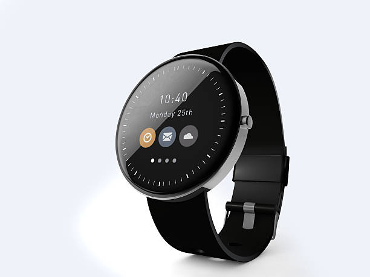

Yes! It is completely water-resistant up to 50 meters, perfect for swimming.
Absolutely. The built-in optical sensor tracks your heart rate 24/7 with extreme accuracy.
While they can track some data alone, most features (notifications, app updates, GPS) require a Bluetooth connection to your smartphone, although some models have built-in cellular (LTE) capabilities.
Yes, smartwatches can make phone calls in one of two ways. If the watch is bluetooth, download your watch's app to connect for phone calls while your phone is within range (around 30ft). For watches with cellular/LTE, phone calls can be made without a phone nearby, but requires you to choose a smartwatch with a smart card and pay a monthly fee.
Yes, some specialized smartwatches can measure blood pressure, but most consumer models only provide estimates, not medical-grade readings. Accurate monitoring requires devices with, or that simulate, an inflatable cuff.